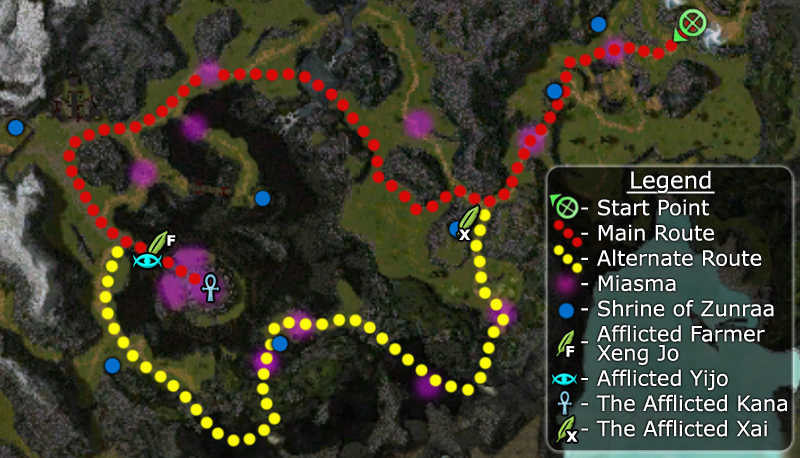

Elite: None / not listed

Click to enlarge · Local cache · Wiki
Master Togo 's search for the source of the affliction has led him to the east of Shing Jea Island . Search Zen Daijun for the source of the infection.
Region: Shing Jea Island · Mission: 2 of 13 · Type: Cooperative
Find the source of the plague.
The goal of this mission is to reach Zen Daijun temple to find the source of the plague and extinguish it. Master Togo and Headmaster Vhang will help you through as allies and Master Togo must survive or the mission will fail. Follow Master Togo a short walk and you will see Miasma (purplish glowing air), an environmental effect that spreads between creatures of the same kind and cause -5 health degeneration. To counter this hazard, summon Zunraa (the guardian of this valley) by ringing the bell at any Shrine of Zunraa (wiki map: blue dots) found through the area. This ally can be called again if he is slain (but you can only have one at a time) and possesses the skill Blessing of the Kirin, used to cure your team of Miasma. Always pull enemies away from the Miasma to fight them or rush through it and fight on the other side. Avoid engaging two groups at the same time, never let them outnumber you.
After traveling a short distance you will reach a small shrine with a large Afflicted group, including The Afflicted Xai. The path splits here: to reach the temple, either travel south through the caves (wiki map: yellow path) or north past the waterfall (wiki map: red path).
Once at the entrance to the temple (bridge with two dragon statues), defeat both Afflicted Farmer Xeng Jo and Afflicted Yijo. After killing these two bosses, eliminate the remaining Afflicted inside the temple to finish the mission. Lure enemies outside if possible to gain more space and avoid AoE damage.
See walkthrough and objectives for bonus details (if any).
Interrupting Yijo's Spirit Rift or careful usage of skills such as Protective Spirit can prove crucial to prevent mission failure.
You can leave Master Togo behind after he stops at the first pocket of Miasma, he will stay there and wait for a party member to go near him to trigger his first intermediate dialogue. Avoid the main path and go northwest, which will prevent your party from going near him. Be sure to clear enemies in the area or they might kill Togo after your party leaves him.